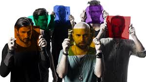

Band

Negramaro is an Italian pop band formed in 1999 and successful since 2005. Their name stems from Negroamaro, a wine produced in their native district, Salento in Apulia. After years spent in the Italian alternative market, they finally became known more widely in 2005 thanks to the Festival di Sanremo.
Negramaro formed in 1999 in Copertino, near Lecce. In the beginning, helped by live performances, they received good reviews. That improved when they met producer Caterina Caselli, who taught them how to record music.
In 2001 they won the Tim Tour and ended as finalists at the MTV Brand New Talent. Their first album, Negramaro, was released in 2003. The sound of the album was too alternative for the Italian public, so it did not have much success. Two singles were released. They were minor hits: "Mono" and "Solo". In 2004, Negramaro met Italian producer Corrado Rustici to work on a few songs. The collaboration between them spawned a brand new track, "Scusa Se Non Piango", and three remixes of previous songs: "Es-Senza", "Evidentemente" and "Come Sempre". The four tracks were added to the other songs from their first album to create 000577, a new edition of their debut work. This new edition gave the band a more pop-rock feeling, which was more suitable for the Italian public. The 2004 version of "Come Sempre" was released as a single with better success of the previous ones, and was even chosen as the soundtrack to celebrate the 50th birthday of the Italian TV network RAI.
Negramaro performed the song "Mentre Tutto Scorre" at the Sanremo Festival in 2005, but were eliminated at the first turn. The song was the first single released from their eponymous second album. After the festival, eight of their songs were chosen as the soundtrack of the Italian film La Febbre, starring Fabio Volo. This helped the band to launch their success: despite the Sanremo disappoinment, the single "Mentre Tutto Scorre" was a success. The second single, "Estate", was even more successful, giving the band their first #1 in the Italian airplay chart. "Solo3min" and "Nuvole e Lenzuola" followed the success of the first two singles.Thanks to hit singles, good performances and critics, their album Mentre Tutto Scorre gained a lot of success, being certified 6× platinum in Italy. This album was different to the first one: it was entirely produced by Corrado Rustici, and took the band in a pop rock direction rather than their classic alternative style. Their change gave them success through radio, music marketing and fans. The album was accompanied by a tour later released on the Negramaro Live DVD in 2006. Their single "Nuvole e Lenzuola" is included in the game Guitar Hero World Tour. Their fifth studio album Casa 69 was recorded at Metalworks Studios in Mississauga, Ontario. Their sixth studio album La rivoluzione sta arrivando was released on 25 September 2015.